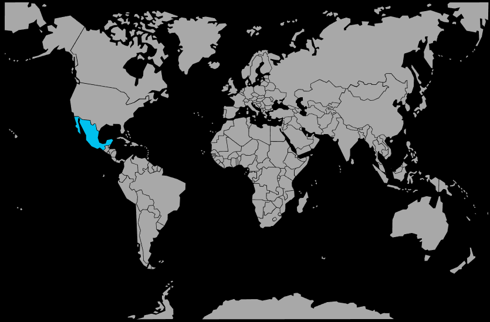

Systématique
- Ordre : Cyprinodontiformes
- Famille : Goodeidae
- Sous-famille : Goodeinae
- Genre : Xenotoca
- Espèce : Xenotoca eiseni
Xenotoca eiseni est un goodeidae mexicain connu pour la queue rouge vif des mâles, ce qui lui vaut le nom de « red tail splitfin ».
Les adultes mesurent environ 6–8 cm ; c’est un poisson robuste mais exigeant en termes de qualité d’eau, souvent maintenu par des aquariophiles avertis.
L’espèce vit en groupe, avec une hiérarchie marquée entre les mâles, occupant surtout la zone médiane et inférieure dans des eaux peu profondes.
Les interactions peuvent être vives, surtout entre mâles, ce qui impose un décor structuré et un effectif suffisant pour répartir l’agressivité.
Mode : vivipare typique des goodeidae ; les jeunes naissent déjà bien formés et relativement grands, en petites portées.
Les alevins acceptent rapidement la même nourriture que les adultes et peuvent rester dans le bac des parents si le décor offre suffisamment de caches.
Dimorphisme sexuel : mâle plus coloré avec queue rouge et patron contrasté, femelle plus trapue, aux couleurs plus ternes.
Espérance de vie : généralement 3 à 5 ans en aquarium, avec une eau propre, bien oxygénée et des températures modérées.
Dans la nature, Xenotoca eiseni occupe des ruisseaux, petites rivières, mares et canaux peu profonds du centre‑ouest du Mexique, aux fonds sableux, pierreux ou vaseux, dans des eaux claires à parfois turbides.
Répartition
Origine naturelle :
- Mexique, versant Pacifique, dans quelques bassins localisés du centre‑ouest du pays.
- Ruisseaux, petites rivières et plans d’eau peu profonds à courant faible à modéré, parfois faiblement végétalisés.
L’espèce occupe des habitats variés mais toujours peu profonds et relativement calmes, ce qui se traduit en aquarium par un bac bien oxygéné, sans courant excessif et avec une bonne surface au sol.
Paramètres de maintenance
Température : 18 à 24 °C, éviter les températures trop élevées en continu.
pH : 7,0 à 8,2.
GH : 10 à 25 °dGH, eau dure à très dure.
Courant : faible à modéré, avec de très bons changements d’eau réguliers pour maintenir une excellente qualité d’eau.
Volume conseillé : à partir de 120 L pour un groupe, avec une bonne surface au sol et un décor structuré.
Régime alimentaire
Régime : omnivore à forte part végétale ; mélange de nourritures sèches, vivantes et congelées, complétées par des apports végétaux fréquents (légumes pochés, algues, aliments à base de spiruline).
Une alimentation variée et riche en fibres végétales, associée à une eau bien oxygénée et des températures modérées, est essentielle pour garder cette espèce sensible en bonne santé.